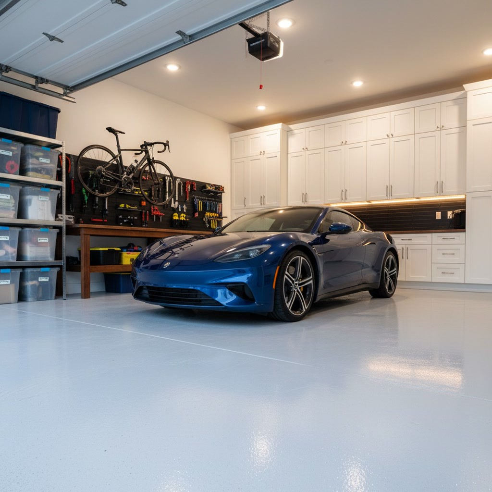
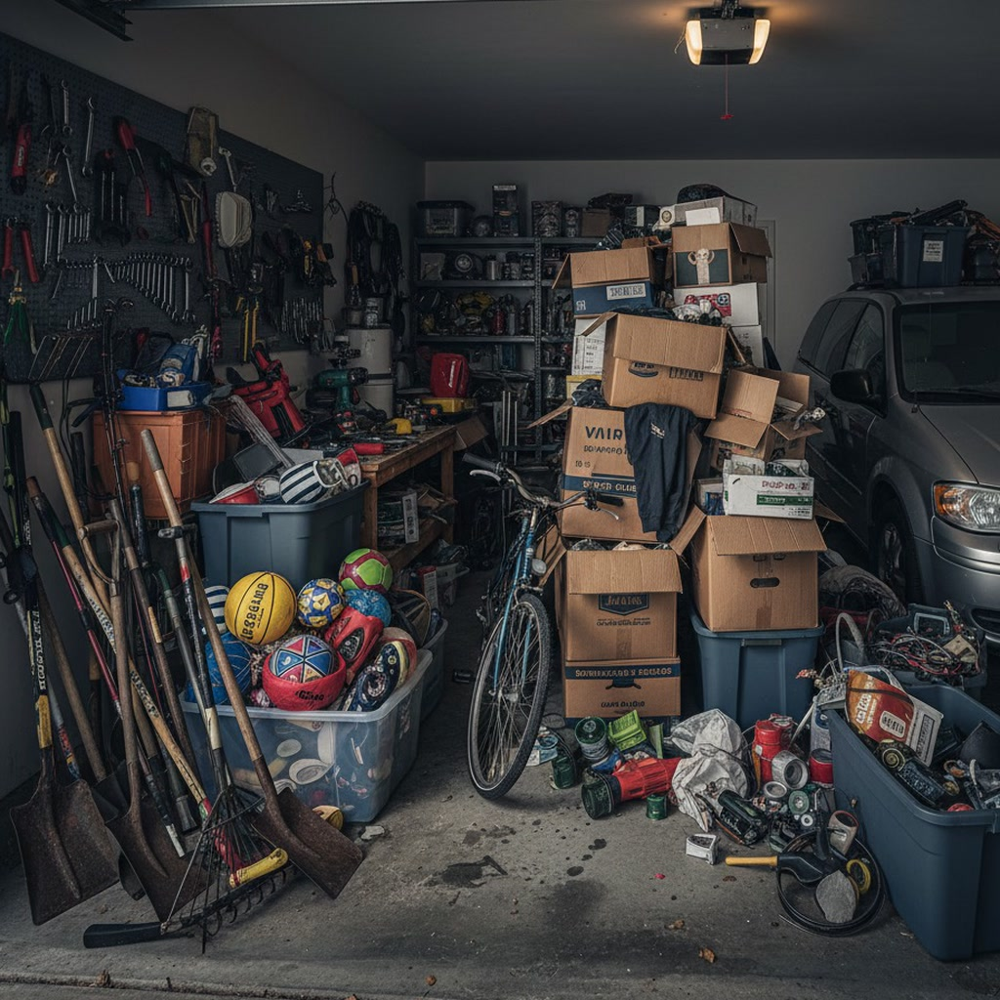
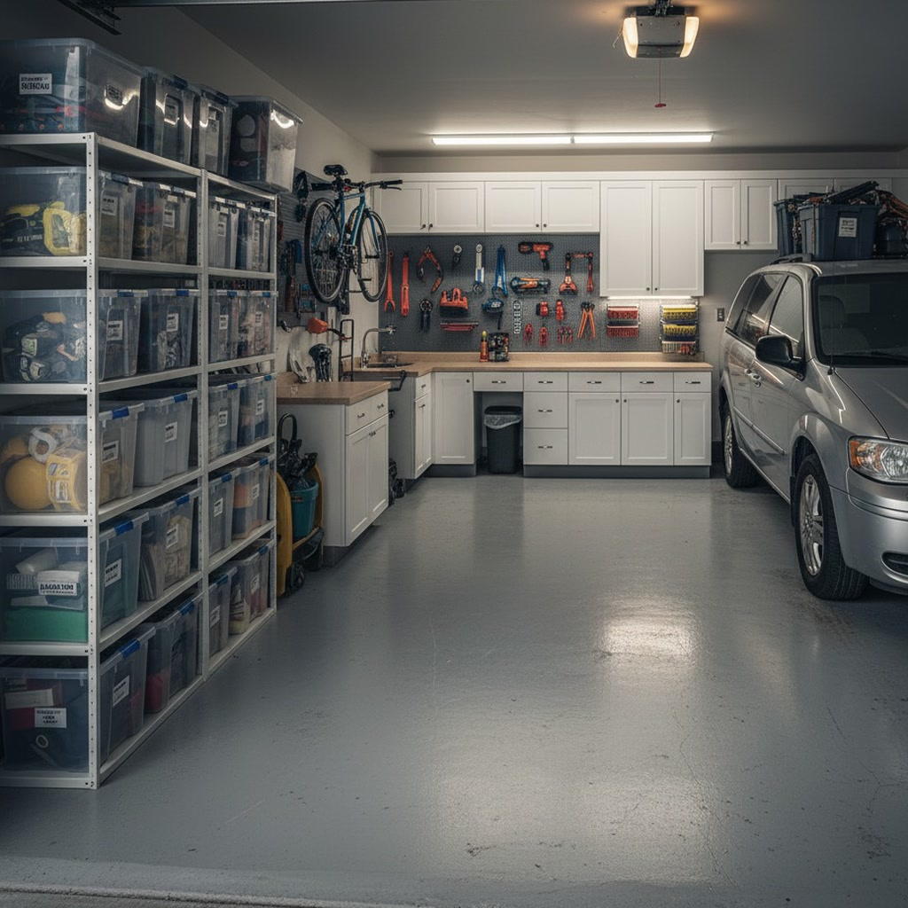
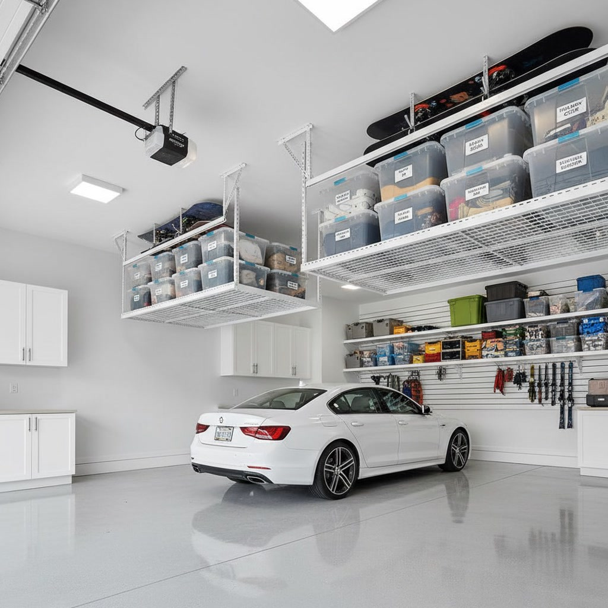
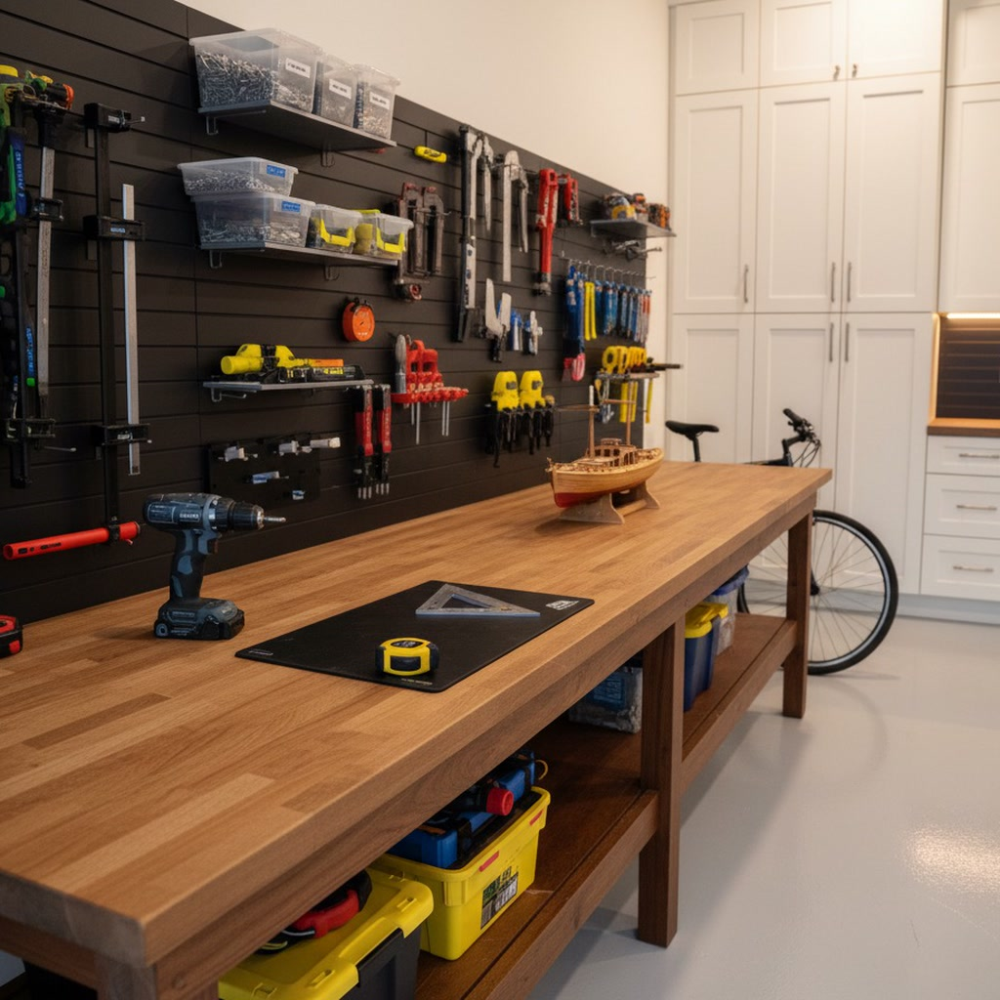

A Calgary garage is hard on cabinets. Every winter drive drips slush and salt brine onto the slab, a chinook can swing the temperature by twenty degrees in an afternoon, and a detached garage off the lane may sit below freezing for weeks. We design and install garage cabinets that are built for that, laid out around the cars you park, and quoted from your photos before anyone comes out.

Installed garage cabinets in Calgary fall into two price bands on our garage storage solutions page: about $800 to $2,500 for a full wall of semi-custom steel cabinets, and $2,000 to $8,000 and up for a full custom system. Where your garage lands depends on how many walls you cover, what the boxes are made of, and whether a workbench, lockable storage or a floor coating is part of the job. Text a few photos to (587) 804-9266 or email info@garagescape.ca and we will send back a fixed price.
The rest of this page is what we look at before we recommend a cabinet: the material, where it hangs, what goes inside it, and what is better left on open shelving.
Most garage cabinets that fail in Calgary fail from the bottom up. A car that comes in from Deerfoot or Stoney Trail in January carries a load of packed snow in its wheel wells. It melts on the slab overnight, runs toward the door or the drain, and anything standing on the concrete sits in salty water. Particleboard drinks it through the cut edges and swells. Cheap steel rusts along the bottom lip where the paint was thin.
Chinooks make it worse. A warm west wind can turn a frozen garage into a damp one in a few hours, and the cold slab and the cold back of a steel cabinet both collect condensation as the air warms. Then it freezes again. Detached garages in the inner city, the lane garages behind homes in Altadore, Mount Royal or Bridgeland, see the biggest swings because most are unheated. An attached garage in a newer suburb stays milder, but its floor still takes the meltwater.
That is why every cabinet we install either hangs on the wall or stands on adjustable legs, with a clear gap above the slab. You can push a squeegee under it in March, and the box never touches the brine.
The material matters most on the bottom row and in an unheated garage. Higher on the wall in a heated garage, you have more choice.
| Material | In a Calgary garage | Where we use it |
|---|---|---|
| Powder-coated steel | Does not swell with moisture. Check the gauge: thin budget steel dents and flexes, and chipped coating rusts. | Base cabinets, tall lockers, unheated and detached garages |
| Melamine over particleboard | Fine while dry. Once water reaches a cut or chipped edge, the core swells and screws lose their grip. | Upper cabinets in a heated attached garage, with every edge banded |
| Plywood, sealed and painted | Stays flatter than MDF through wet and dry cycles if every face and edge is sealed. | Custom builds and odd-sized walls in older garages |
| Raw MDF or particleboard | Swells and crumbles when wet. Big-box kits often use it to hit a low price. | We don't install it in garages |
| Plastic resin cabinets | Waterproof and light, but flex under heavy loads and can go brittle in deep cold. | Light garden and cleaning supplies |
The custom cabinets we build in Mount Royal use the same rules: steel or sealed boxes near the floor, finer finishes higher up where water never reaches.
Closed cabinets cost more per square foot of storage than open shelving, so we put them where doors earn their price. The rest of the garage goes on steel shelving, wall track or overhead racks, which our custom shelving page covers.


Doors where they earn it, shelving for the restAn example garage, not a Calgary client's. Bins that get pulled every week stay on open shelving; the back wall gets closed cabinets for chemicals, tools and the things you don't want to look at.
| What you're storing | Best home | Why |
|---|---|---|
| Paint, solvents, fertilizer, pool and lawn chemicals | Lockable cabinet, upper or mid height | Out of reach of kids and pets, off the wet floor, and in one place when it's time for a drop-off |
| Power tools, chargers, drill bits | Base cabinet with drawers under a workbench | Dust stays off, and the bench sits where the tools get used |
| Hand tools you grab weekly | Pegboard or slatwall above the bench | You can see what's missing at a glance |
| Winter tires on rims | Wall-mounted tire rack | Too heavy and dirty for a cabinet; a rack keeps them off the slab between swaps |
| Camping gear, holiday decor, off-season sports | Overhead racks | Used a few times a year, so it can live above the car |
| Hockey bags, bikes, skis | Wall track hooks | Bulky gear needs air to dry, which a closed cabinet doesn't give it |
| Gasoline and propane | Approved containers, away from a gas garage heater | Not in the closed chemical cabinet; see the fuel note below |
Fire prevention guidance based on the Alberta Fire Code caps stored fuel at a home with an attached garage or shed at 30 litres, not counting what is in your vehicles, and it has to be in approved containers. The snowblower and the mower count if you keep spare cans for them. If your garage has more than that, part of our job is to plan less.
This is the most common garage we work in, from Mahogany and Auburn Bay to Evanston and Sage Hill. The side walls are often the narrowest part, with the door into the house, a few steps and a landing taking one corner. The front wall, the one your bumper faces, usually has the most clean wall to work with. We put upper cabinets there, high enough for the hood to clear, and keep the side walls shallow so car doors still open all the way.

Older inner-city garages are often single or narrow doubles, unheated, with a man-door to the yard and walls that are not square. Stock cabinet kits assume a flat, tall wall, and these garages rarely have one. We favour steel or sealed boxes here because of the cold, and we often build up rather than out: a tall locker or two, upper cabinets on the back wall, and a ceiling rack for the seasonal bins.
In the west-side estate communities, where we've written about Aspen Woods and Springbank Hill, the third bay often becomes the workshop, the gym or the gear room. A full wall of matching cabinets on that side, with a coated floor, makes the garage look finished from the driveway.
Shops in Bearspaw, Springbank and Priddis are bigger and colder, and the storage is heavier: chain saws, fencing tools, trailer gear. We pair heavy-gauge steel base cabinets with industrial shelving. Our Bearspaw page goes into those shops in more detail.

If you fix bikes, sharpen skates or do your own tire swaps, the base cabinets become a workbench. A run of steel base cabinets with a hardwood or butcher-block top gives you closed drawers for the tools and a surface that takes a vise. We set the counter height to the person who uses it most, put a power bar along the back, and hang pegboard or slatwall above for the tools you reach for weekly. The workshop organization guide covers the bench layout itself.
Lighting is the part most people forget. A cabinet wall makes the garage darker, so we tell you early if the single bulb in the middle of the ceiling is going to leave the bench in shadow.
The two bands at the top of this page cover most garages. Inside them, the price moves on five things:
Big-box steel kits can cost less up front. What you're paying us for is the measuring, the anchoring into studs, the levelling on a sloped slab, and a layout built around your cars, your door swing and what you own. For a side-by-side on doing it yourself, read hire vs. DIY garage organization.
Old paint and chemicals that turn up during the clear-out go to the City of Calgary's free household hazardous waste drop-off. The City lists 11 sites, eight at fire stations and three at landfill Eco Centres, and not every fire station takes every item, so check calgary.ca/hhw first.
We install cabinets in Airdrie, Chestermere, Cochrane and Okotoks as well. See our Airdrie and Chestermere organization pages for how we work in those towns, and our Calgary garage organization page for everything beyond cabinets.
Semi-custom steel cabinet systems run about $800 to $2,500 for a full wall, supplied and installed. Full custom cabinet systems run $2,000 to $8,000 and up, depending on materials and how many walls they cover. We quote each garage from photos, and the quote is fixed before any work starts.
Powder-coated steel holds up best on the bottom row, where slush, salt brine and mop water reach. Melamine over particleboard works higher on the wall in a dry, heated garage if every edge is banded. Raw MDF and particleboard swell when they get wet and are the wrong choice anywhere near the slab.
Not directly. A Calgary garage floor gets meltwater from every winter drive, and cabinets standing on the slab wick it up or rust at the base. We hang cabinets on the wall or set them on adjustable legs so there is a gap to sweep and squeegee under.
Yes. The front wall of an attached garage is usually the best spot for wall cabinets, mounted high enough that the hood and the open tailgate clear them. We measure your vehicle and the door track before we set the height.
Fire prevention guidance based on the Alberta Fire Code limits fuel stored at a home with an attached garage to 30 litres, outside vehicle tanks, in approved containers. We plan a spot for the fuel can away from any gas garage heater or other ignition source, and we keep it out of the closed cabinet that holds paint and chemicals.
We can. Decluttering and organization starts around $299, and it is the cheapest way to shrink the cabinet order, because the things you let go of never need a door. If a floor coating is part of the plan, it goes down while the garage is empty, before the cabinets.
Yes. We work across Calgary and in Airdrie, Chestermere, Cochrane and Okotoks. Send photos and your address and we will confirm the visit and the price.
Text us photos of the walls you want covered and the cars you park. We'll reply with a layout idea and a fixed quote.
Call or text. Photo quotes work for most garages.
All Calgary communities
Plus Airdrie, Chestermere, Cochrane & OkotoksThe fastest way: call or text a photo of your garage and we'll have a quote back to you the same day.
Call (587) 804-9266 Text Us a PhotoMon–Fri 8am–6pm · Sat 9am–4pm · texts answered evenings too